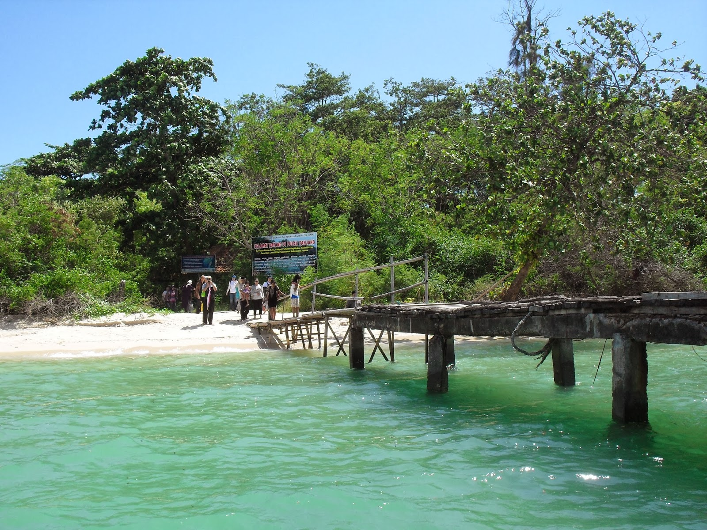

Pulau Panjang
Pulau Panjang terkenal karena memiliki laut dangkal di sekelilingnya. Arus yang cukup tenang juga dapat dimanfaatkan untuk berkano di sekitar pulau. Airnya yang cukup jernih membantu Anda untuk melihat dengan jelas terumbu karang dan ikan-ikan yang berenang tepat di dasar laut. Selain berkano, pengunjung juga dapat berenang dan menyelam dengan bebas di tempat ini. Garis pantai yang panjang juga membuat wisatawan semakin betah untuk berlama-lama bermain di hamparan pasir putih.
Untuk mencapai pulau ini tidaklah sulit, wisatawan dapat menyeberang dengan menggunakan kapal dari Pulau Kartini yang berjarak kurang lebih sekitar 2,5 km saja. Waktu tempuhnya juga cukup singkat, yaitu sekitar 30 menit. Selain atraksi air seperti di atas, Pulau Panjang juga menawarkan pemandangan alam yang sangat elok.